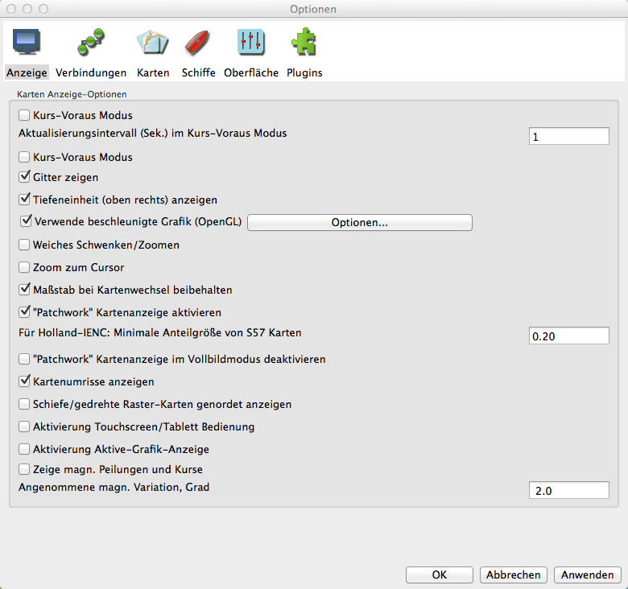

Einstellungen Anzeige
Einstellungen Anzeige

Karte nach Kurs ausrichten: Siehe hier.
Aktualisierungsintervall (Sek.) im Kurs-Voraus Modus Bestimmt, wie oft die gesamte angezeigte Karte aktualisiert werden soll. Die Eigenes-Schiff und AIS-Symbole werden weiterhin jede Sekunde aktualisiert. Der Standard Wert ist 15 Sekunden.
Kurs-Voraus Modus Siehe hier.
Gitter Überlagert der Karte ein sich automatisch anpassendes Längen/Breiten Netz. Diese Funktion arbeitet nur im Nord-oben Modus. Das Gitter ist nützlich bei Vektor-Karten, die das nicht von Haus aus haben.
Tiefeneinheit (oben rechts) anzeigen Zeigt die Karten Tiefeneinheit, falls verfügbar. Im Quilting Modus werden Einheiten nur gezeigt, wenn alle Karten im Quilting die gleiche Tiefeneinheit haben.
Verwende beschleunigte Grafik (OpenGL) Siehe hier.
Weiches Schwenken/Zoomen Geht am Besten zusammen mit OpenGL, daher aktivieren Sie es mit OpenGL. Probieren Sie es, wie es mit Ihrer Grafikhardware funktioniert. Diese Funktion arbeitet nicht bei aktiviertem "Mausrad-Zoom auf Cursorposition aktivieren" unter Lasche Einstellungen/Sonstiges.
Zoom zum Cursor Normalerweise wird beim Klick in den Bildschirm die Anzeige am Klickpunkt zentriert. Das Mausrad-Zoom verwendet immer die Mitte der Anzeige. Mit Aktivierung dieser Funktion geschieht das Zoomen am Cursor-Punkt. Das heißt, sobald gezoomt wird, bleibt der Cursor an der gleichen Stelle des Bildschirms und an einer ungefähr gleichen geografischen Position. Das ist von Vorteil zum feineren Zoomen an einer Position mit dem Cursor. "Weiches Schwenken/Zoomen" aus dem vorherigen Punkt wird bei dieser Aktivierung vollständig abgeschaltet.
Maßstab bei Kartenwechsel beibehalten Normalerweise öffnet OpenCPN die neue Karte beim Kartenwechsel im Maßstab nahe ihres eigenen Maßstabs, der Zoomfaktor bleibt der Gleiche. Bei Aktivierung dieser Funktion behält OpenCPN beim Kartenwechsel ungefähr den Maßstab der vorherigen Karte. Der Zoom-Faktor wird erhöht, wenn zu einem kleineren Maßstab gewechselt wird.
Quilting "Patchwork" Kartenanzeige aktivieren Siehe hier.
Quilting "Patchwork" Kartenanzeige im Vollbildmodus deaktivieren Standardmäßig werden alle sichtbaren Karten mit passender Skalierung im "Quilting" verwendet. Mit dieser Aktivierung werden nur Karten, die die Mitte des Bildschirms betreffen, für das "Quilting" benutzt. Das ist leichter für einige Systeme und gibt mitunter eine Leistungssteigerung.
Kartenumrisse anzeigen Es werden die Ränder der verfügbaren Karten gezeigt. Vektor Karten sind grün, RasterKarten sind rot und verfügbare größere CM93 Karten sind purpur. CM93 Kartenumrisse erscheinen nicht im Quilting Modus. Als Vorsichtsmaßnahme sind bei CM93 die Umrisse von Gefahrenstellen mit groß skalierten Karten auch bei "Kartenumrisse abgeschaltet" verfügbar, wenn Quilting aus ist und die Skalierung groß genug ist. Bei einem Maßstab von 1:200.000 oder größer werden diese isolierten Inseln und Gefahrenstellen gezeigt. Es wird daher empfohlen, bei großen Passagen in CM93 kein Quilting zu verwenden. Siehe hier.
Schiefe/gedrehte Raster-Karten genordet anzeigen Korrigiert schiefe (nicht genordete) Raster-Karten. Ein typisches Beispiel dafür sind die Intra-Coastal-Waterway (ICW) Karten. Weiteres hier.